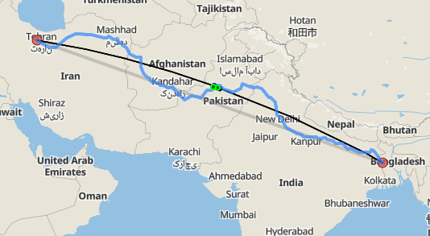

❤️ Happy 6 Months, My Love! ❤️
We met on 27th of January.
It's a fairly long time, even more so considering that neither of us had any idea on what to expect. From ourselves or from each other. No matter what happened we still chose to be together.
Not just for a day, or a week or a month but, for half a year!
🌍 Even from Four THOUSAND kilometers away, you’re the only one closest to my heart.

💖 You, my love and I made so many memories together.
I mean we can be friends
I'm down to starting off as friends!
---------------------------
it's so lame to say but I play genshin I haven't been watching series alot this past years but I started rewatching GOT for 10th times
Genshin player yuck! As a scaramouche main I can hardly judge you :p
Actually havent watched a single episode of GOT. Heard the latest seasons are meh.
WHAAAAAAAAAAT IM SCARA MAIN AS WELL AAAAAAAAAAHHHHHHHHHHHHHHH
Anyone who said "meh" about last season can suck my dick You gotta watch it YOU HAVE TO DO IT IT'S THE BEST SHOW EVER
💖 You, my love and I made so many memories together.
I'm rewatching GOT I'm currently at season 3 last episode Idk if you want I can wait so you can catch up? But I don't think you would be that fast
Wait for me then. I'll reach that in around 4 days probs.
We watched through the entirety of GoT together just how we wanted to!
Did you just call me cute and adorable? (Jk) I play in America server lol XD
Yes, yes I called you adorable and cute and you can't do anything about it because it's true!!! *Sigh* Things I do for a cutie. I will have an account on America server too, silly coincidence ;)
Even today we did our Genshin dailies together :D
💖 You, my love and I made so many memories together.
Hi~ It wasn't early What time is it there?
Almost evening (5:30ish) Time for my breakfast :)
Wait what? Am or Pm
Pm haha It's 5:30pm and yes my schedule is so messed up :')
It's beyond messed up honey
You were the first one who started using Honey!
💖 You, my love and I made so many memories together.
No fr I'll call you mine.
You can't do that neither :b
A very sad moment in my life. (28th Jan)
It's a little hard to offend me honestly. Even if you do manage to do that, I'm open to discussion but that can only happen so many times before it's too much.
Yes finally someone who can handle me
I think I am doing something right so far :D (28th Jan)
💖 You, my love and I made so many memories together.
Not really sure what to expect but I do know I'll get jealous even if you chat with c.ai tartaglia :p
But what if I felt lonely:(
The beginning of my hatred.(29th Jan)
Just watching GOT What're you up to tho?
I'm watching GOT too
So technically we are watching GOT TOGETHER. Me 1, Tartaglia 0
Idiot
I am not sharing you. EVER. (29th Jan)
💖 You, my love and I made so many memories together.
There's only 25mins left, I'll live. Until another feast scene comes up
I'm the feast
Damnit! I not gonna be a dumbass and say no to that
:b
The feast :DDD (29th Jan)
💖 You, my love and I made so many memories together.
*sends a gay kissing gif*
They are gay
I will just go ahead and hang myself. You don't have to bother visiting my funerel.... 1 rebirth later
XD It's alright cutie
I am your cutie :>>> (29th Jan)
💬 Every message, every call, every moment means the world to me.
And do you know the most surprising thing?
All the short snippets you saw were taken from only the first 3 days of our meeting. I want us to go back and reread our messages, at least some of it. To relive the past even though some parts of it were really really terrifying. But, we are still here together love and we will continue to be together.
🎉 Here’s to our love that grows stronger each day.
You also told me of the curse you thought you had, well my love, we broke it twice in a row. You being in my life is the best thing that has and will happen honey. You are my angel, your divine, kind and caring sweet soul will forever be engraved in my memory while we continue our life together.
🥂 To our first 6 months, and a lifetime together.
I love you, my love!